Walter:
- 股票从来都不是股票，而是你的贪嗔痴疑慢，成功者基本都成了哲学家；
- 关于买卖点：
- 买点总在恐慌的下跌中形成，但只要买点出现，就要义无返顾地买进。
- 上涨总在不同情绪的交织中进行，抵抗住各种情绪的干扰，用钢铁般的意志把股票持住，决不中途给抛下车。
- 卖点总在疯狂的上涨中形成，只要卖点出现，手起刀落，让股票见鬼去。
- 顶分型的时候是形成顶分型那天冲高卖，而不是收盘等顶分型都很明确了再走，也就是说当顶分型形成的最后一根 K 线在前高位之下出现顶背驰就走。
- 文中的
1 分钟走势类型=5 分钟的线段； - 文中的
5 分钟中枢就是指5 分钟线段中枢。
正文
(2007-09-11 21:38:07)
今天本应该说点别的，但市场一跌，大多数人都没什么心情看别的，所以不妨再说一下股票。而股票又何曾就是股票？把股票只当成股票，那当然会被股票所缠。
股票从来就不是股票，而是你的贪嗔痴疑慢 ；没有任何的失败相关于股票，而只关于你的贪嗔痴疑慢，股票不过是一个幌子，一个道具。
在西方，真正在资本市场上有成就的，基本都成了哲学家。没有对市场的洞察，靠整天这消息、那题材地折腾，那永远只能在散户的区间中震荡。有此眼界，不一定能达此高度，毕竟眼高手低也是通病；但无此眼界，就一定不可能达此高度。
本 ID 有时候喜欢用一些刺激性的词语，为什么？就如棒喝，就是要刺痛你，激发你的贪嗔痴疑慢，这样才有醒的一天。所有希望来市场寻找温情、同情、眼泪的，都可以回家磨豆腐，这些玩意，市场里什么时候曾有过？
在市场里要成功，除了比市场还要强悍，别无他法。市场出现卖点，你还幻想着火星，那就回火星去吧，地球需要的是手起刀落的强悍。
这次，提供了一个绝佳的例子，那么，不妨看看所有没有强悍的究竟都犯了什么毛病？注意，这不是批斗会，而是严肃的解剖，无论你现实中具体如何操作，都有解剖的必要。 市场，没有逻辑，本 ID 的理论给了市场以逻辑。
一、所有的顶点都必然是顶分型
这是本 ID 理论的一个最简单的结论。从这可以严格推导出什么？就是一旦出现顶分型，离开就是唯一的选择。至于顶分型后是否形成笔，那是离开后再判断的事情。顶分型后，无非两种选择：
- 形成笔，也就是构成一个底分型与顶分型间有不共用的 K 线。
- 不形成笔，也就是构成的底分型与这顶分型之间只有共用的 K 线。
但无论哪种选择，都有足够的空间让你的反应，如果是第一种，那调整是大的，第二种，调整是小的 ，这，在昨天，本 ID 专门写的课程里有很多例子反复说明了。为什么？因为本周，3600 点以来第一次有绝大的可能出现周线上的顶分型，这可不是今天才说的。
那么，这么明确地知道了这一点，按照市场的逻辑，正如昨天的课程里反复强调的 “ 注意，顶分型的时候是形成顶分型那天冲高卖，而不是收盘等顶分型都很明确了再走 ”，那么对于周 K 线，这一点是一样的。
而日线上，大盘在 9 月 7 日的顶分型已经明白无误。
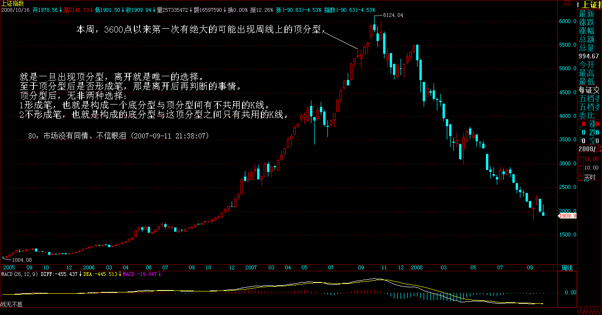 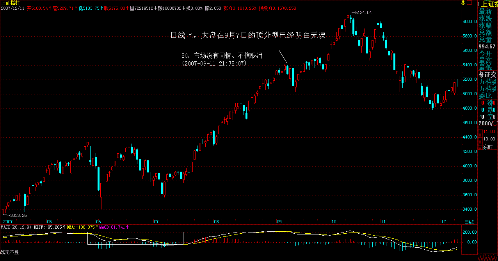
二、中枢震荡的卖点都是出现在向上离开中枢时
这也是本 ID 理论中最简单的结论了，那么，在最近形成的 5 分钟中枢中，任何向上离开 5333 点 ( 注：5 分 ZG 5337) 的震荡，最终都将形成卖点，当然，该卖点后回抽如果回不到 5333 点，可能形成第三类买点，但这是卖点后的事情， 没有任何可能比当下的卖点更重要 。而且，股票的交易规则，没有规定卖了就不能再买。
现在，我们可以很客观地面对这样一个问题，就是，一个离开 5333 点的中枢震荡把指数带到了 5395 点，该震荡对应的线段出现明显的类背驰然后出现明显的破坏，这时候，我们可以很理智地判断当下的形势：
-
周 K 线顶分型可能不成立，也就是可以突破 5412 点，和 5395 点相差的距离就 17 点。
-
周 K 线顶分型一旦成立，那么，即使不形成周线图上的笔，也将至少调整到出现一个底分型，至少去碰一次 5 周均线，而一旦出现笔，那调整的幅度就至少是对 3600 点以来的总调整，最强势的 1/4，也要有 450 点，更不用说 1/3、1/2 的比例了。
-
短线中枢震荡已经出现卖点，如果在这个位置卖，就算后面周的顶分型不成立，也有震荡的低点以及第三类买点可以重新介入。
归纳上面三个最严格的判断，那么，该干什么还不是一目了然的事情？
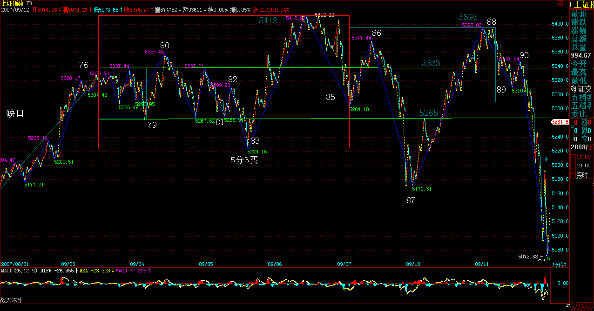 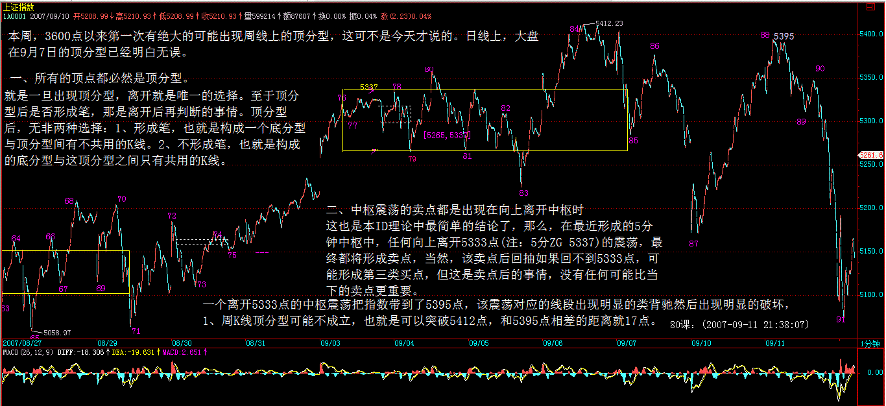
D 在昨天特别强调，这时候宁愿卖错，绝对不能买错。为什么要强调这，就是本 ID 知道， 很多人，被自己的贪嗔痴疑慢所迷惑，宁愿用十几点去对赌几百点，用 1% 的可能去对赌 99% 的可能。如果 1% 可以换来 100 倍的收益，那当然没问题，但事实上根本不是这样 ，那么，为什么还要坚持？说白了，只有五个字：贪嗔痴疑慢。
对于散户来说，本质上没有卖错，只有买错。为什么？卖错又不会亏钱，买错就不同了。卖错了，有钱，这么多股票可以被面首，为什么要一棵树吊死？
而且实际上，只要你不被自己的贪嗔痴疑慢所左右，根本也不存在卖错的问题， 很多人，在连日顶分型的雏形都没有的情况下就卖，为什么？不过是贪嗔痴疑慢， 觉得高了、觉得恐慌了，觉得惊吓了。而到真正的顶分型出来了，反而要假设这顶分型是假的，调整一下就可以突破的，就不觉得高了，不觉得恐慌了，不觉得惊吓了，人的颠倒，往往如此。
来本 ID 这里，如果真是想洗心革面，就要首先掌握本 ID 的理论，然后用该理论去操作，在操作中把自己培养成钢铁战士，钢铁战士的 最基本标准 是什么：
一、买点总在恐慌的下跌中形成，但只要买点出现，就要义无返顾地买进。
二、上涨总在不同情绪的交织中进行，抵抗住各种情绪的干扰，用钢铁般的意志把股票持住，决不中途给抛下车。
三、卖点总在疯狂的上涨中形成，只要卖点出现，手起刀落，让股票见鬼去。
四、任何的操作失误，只是一次跌倒，跌倒就爬不起来的，绝对不可能是钢铁战士。失误就要总结，绝对不在同一错误上犯上两次。
五、买错比卖错严重，一旦确认买错了，一定要手起刀落，让股票见鬼去。如果市场给你一次改正错误的机会你没把握，也就是第二类买卖点，那就买豆腐回家；如果市场给你第二次改正错误的机会你没把握，也就是第三类买卖点，那就直接回家磨墙。
六、市场只有你才能帮助你，被市场毁掉的是你，战胜市场的也是你，你比市场强悍，市场就是你的；否则，你就是市场的点心。
七、踏准市场的节奏，就可以在刀山火海中逍遥游。
本 ID 这里，人越少越好，草深三丈也无妨。如果不想成为钢铁战士，那就没必要来这里看任何有关股票的东西，其他东西可以看，别的地方可以去，何必来这里生气？
如果哪一天，你钢铁战士了，你也没必要觉得本 ID 教了你什么。本 ID 这里无授无得，本 ID 无一法给人，你只是你，你钢铁了，自然就战士了，和本 ID 无关。
但你没成为钢铁战士之前，最好还是有自知自明，本 ID 反复强调，如果你技术不行的，没有手起刀落的修为，就先把仓位减下来。那么，很多没减的，又没有手起刀落修为的，是不是又被贪嗔痴疑慢？
没到那水平，没到能在刀锋上舞蹈的水平，就别玩悬的，干自己能力范围内的事情。市场中最大的毛病之一，就是杀牛用鸡刀，屠龙用鸭刀，最后都被鸡了鸭了去了。
市场上不是每一笔钱都适合任何人去赚的，面对市场的机会，少点贪嗔痴疑慢，认清自己的能力，这比什么都重要。
市场是连续的，高位走了不是天堂，高位没走不是地狱。大跌，不过是下一买点后大反弹的前戏。这一切，都逃不过本 ID 的理论，而是否参与，则与你的操作级别相关，也和你的操作能力相关。
没有人天生就是胜利者，也没有人天生就与失败为伍。人人是佛，无一人可度，无一人需救，人人有明珠一颗，照破山河大地，又何必憋屈了自己？
本 ID 理论的现场教科书演示 (2007-09-12 15:42:13)
原网址 : http://blog.sina.com.cn/s/blog_486e105c01000ckt.html
今天的走势太技术，简单说，就是昨天说的，跌破 5 周线后必然有反弹，问题的关键是这个反弹能延续到什么位置，如果不能抽回 5265 点之上，那么后面的走势依然充满凶险。
但如果了解了本 ID 理论的一些最简单结论，那今天的走势，简直就是一个现场教科书演示。你可以清楚地看到，走势是如何从线段扩张成一个 1 分钟中枢的，而其中利用背驰等关系，又是如何能在火海刀山中逍遥游的。
显示，第一个绿箭头的那一笔，没有发生笔破坏，那必然要回落去完成线段的走势，这是理论上 100% 保证的。
而 92 这一处，出现线段破坏，但该线段不能拉回 85 处，那么这就构成了 85-88 这 1 分钟中枢的第三类卖点，后面的继续下跌也是理论 100% 保证的。
93 处，标准的线段类背驰，这就意味着 92 这 1 分钟第三类卖点，将出现中枢扩展，至少形成一个 1 分钟中枢，这也是理论 100% 保证的。
也就是说 88-93 的下跌已经完成，后面必然有一个针对这下跌的反弹。后面的演化，都如教科书般标准，学过本 ID 理论的，都知道这一切都可以当下判断，无须事后分析。
那么，现在后面的走势如何，很简单，84-93 这个 1 分钟的走势类型离开 76-85 这个 5 分钟中枢后，就要看一个 1 分钟的走势类型的反抽能否出现回到 79 这一点，也就是 5265 点之上。不行，就构成这 5 分钟中枢的第三类卖点，后面至少要扩展成为 30 分钟中枢，最恶劣的，就是一个 5 分钟级别的下跌。
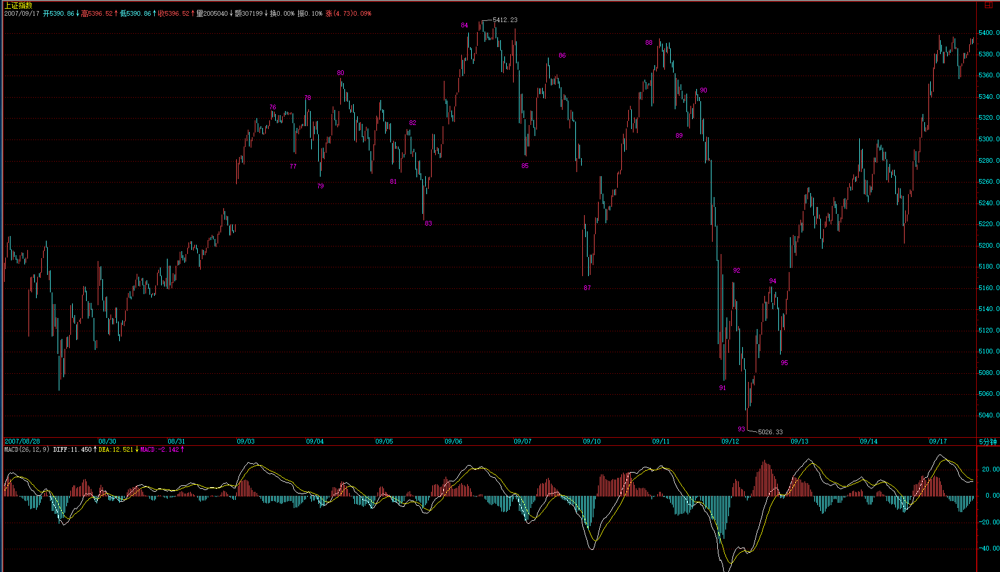
() 以 5 分钟图说明，76-85 是在 5 分钟图上的 9 笔延伸，从而升级的 5 分钟的线段中枢，中枢内部的级别为 5 分钟线段，即 1 分钟走势类型 ) 今天在 93 点按理论要求进去的，以及昨天没按理论要求走的，都要关注这第三类买卖点是否成立，如果不成立，那大盘就继续中枢震荡，那简直是本 ID 理论的天堂。
个股方面，其节奏不一定和大盘一样，用本 ID 股票为例子，600578、000099、000999 这些，昨天并没有任何构成日顶分型的迹象，而今天很快也破坏了形成日顶分型的可能，这是短线的强势股，就一定要耐心等待日顶分型的出现。
而像 000938 这些，如果你用本 ID 的理论去操作，里面的短差机会对于散户来说简直好玩透了。请好好研究一下 000938 的图，看看昨天的顶分型多么标准，而今天 17.59 的底背驰又是多么经典，力度比较请看 5 分钟图。这两者的差价有多少？
别看不起短线，看不起短线的，不过是因为你没这水平。当然，没这水平，就别太短线了，短线可需要战士够钢铁。
本 ID 的理论可不单单是短线的，各种级别都适合，关键是你能真掌握了。 先下，再见。
 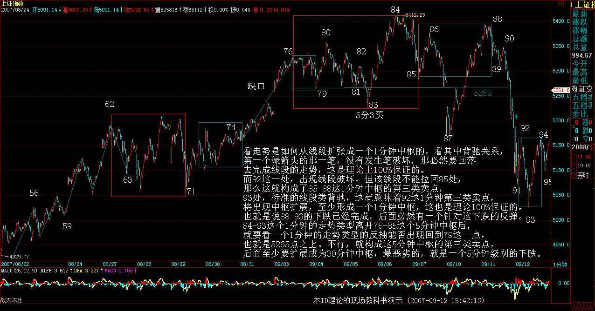
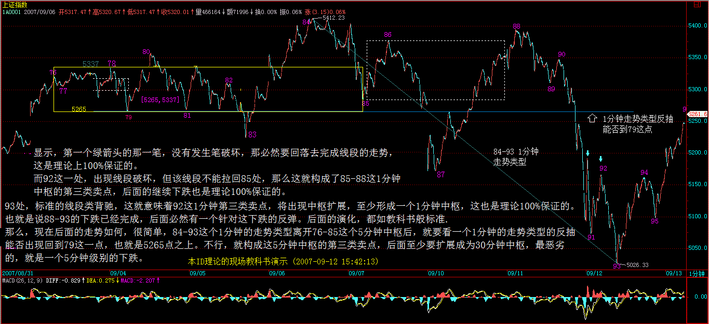
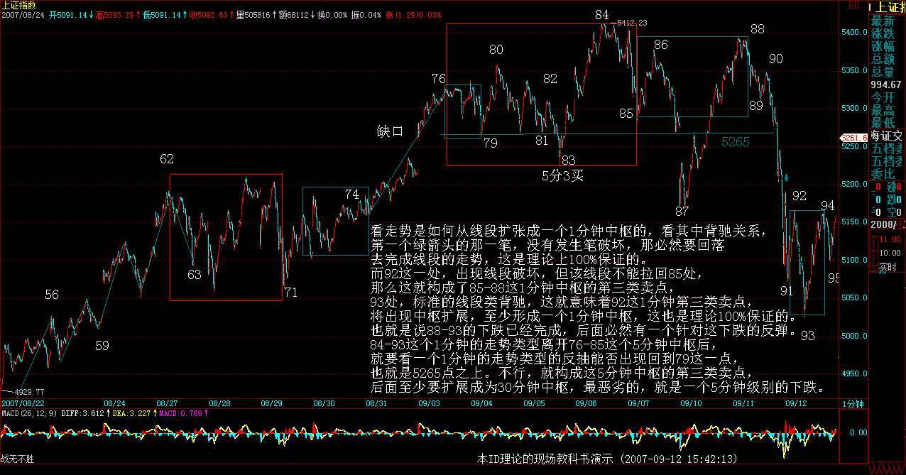
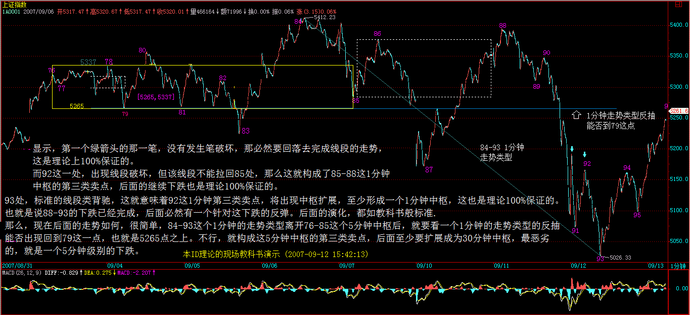
刚回来，说两句 (2007-09-12 23:58:00)
原文网址：http://blog.sina.com.cn/s/blog_486e105c01000ckx.html
刚回来，一个极端无聊的晚上。本 ID 在西南某省投了一个矿，结果内部的一些事情闹到本 ID 这里来，搞到本 ID 用了一晚的时间去折腾这事情。最后，本 ID 一轮花言巧语，终于把 N 个属于本 ID 父辈年龄的老头给说回去，明天一大早飞机，老头们可以和北京说 88 了。
本 ID 给他们下的一个套就是，你们好好把你们现在的业务搞好，比矿有前途，你们这是现代服务业，一旦你们在两年内搞出业绩来，本 ID 一定 PE 你们，现在这些小事就算了，以后你们前途无量，你们要搞一个最牛的上市公司，本 ID 就当你们的小股东。
不说了，累了，二级市场就没这些破事，在中国，哪个人斗人起来不都是英明神武的？这些五、六十的老头，也是行内的超级专家了，还斗个不停，知识分子有时候就是该被洗刷洗刷。
废话一大堆，其他东西没时间写了，晚上还有足球，本 ID 休息一下，3 点还要足球。
先下，再见。
有些钱不是适合每个人赚的 (2007-09-13 16:00:16)
原网址 : http://blog.sina.com.cn/s/blog_486e105c01000cl1.html
看完下面文章，请务必看 各位注意，严重更正
首先表扬一下某网友，请看： [ 匿名 ] 新浪网友
2007-09-13 11:25:01 呵呵，被我说中了，目前就看破不破 5166。不破 5166 就是 1F 三买，那就还有机会冲击 5265
这就如同下棋，只看一步，肯定高手不了，能知道上午的跳水，其实是去形成 92-95 的第三类买点，这就不错，为什么？因为一般都关注 5265 点了，5265 点按理论，如期成为大盘的阻力，由此产生的回落，当然可以短差一把，但由于在 96 时，95-96 与 93-94 的力度对比并没有明显的类背驰，而且一旦回落形成下面 1 分钟的第三类买点，反而成为反弹继续的动力，能看出这一点，就比光看 5265 点要更进一步了。
后来，96 到 99 形成一个新的 1 分钟中枢 ( 注：后面有更正），那么这个对 76-85 这 5 分钟中枢，86-93 的 1 分钟走势类型离开，93 开始的 1 分钟走势类型的反抽就一目了然了，这意味着，后来，突破该中枢继续上行，突破 5265 点，第三类卖点不成立，76-85 开始的中枢震荡依旧。
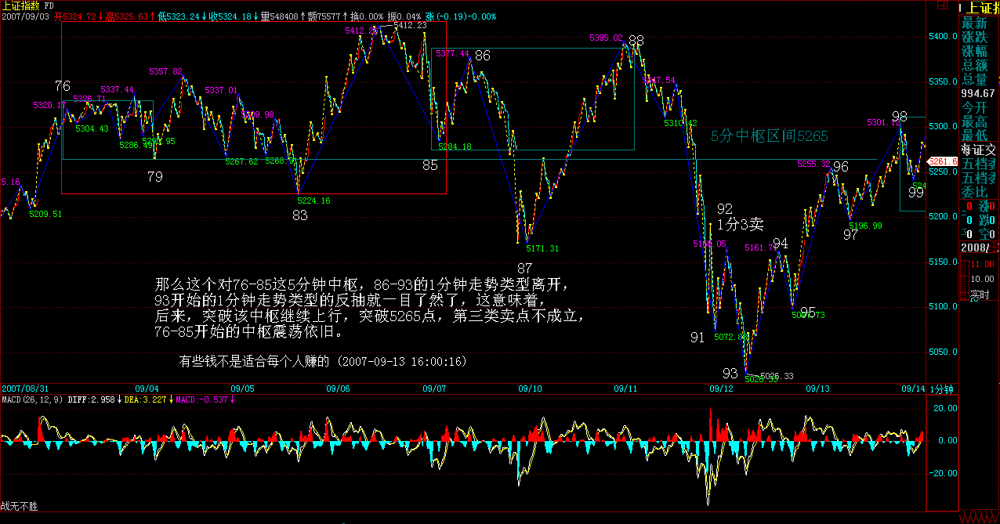
显然，目前这个 93 开始的 1 分钟走势并没有结束，96-99 是第一个中枢，如果是盘整走势，那么 99 开始的向上就要和 93-96 的形成盘整背驰，如果不形成，这走势就强了，理论上大盘完全可以再创新高。但探讨这个问题没意义，关键是看这盘整背驰是否形成。
不过，对于 96-99 这 1 分钟中枢，其第三类买点还没有形成，因此，比上面的盘整背驰还要急迫的，就是要确认这第三类买点，否则，最多只能是这 1 分钟中枢的震荡，然后由此产生 96-99 的第三类卖点，转而下跌也是符合理论要求的。( 注：为参考禅师的思路，下图划分还是继续更正前的划分 , 原 1 分中枢错误划分 )
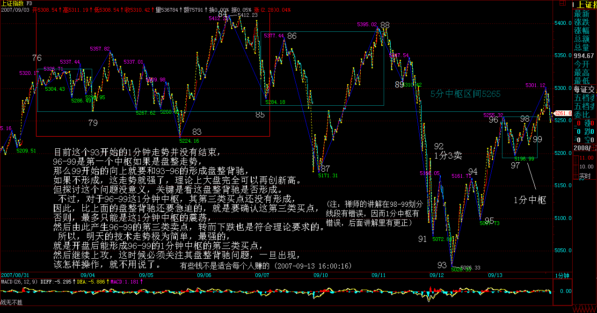
所以，明天的技术走势极为简单，最强的，就是开盘后能形成 96-99 的 1 分钟中枢的第三类买点，然后继续上攻，这时候必须关注其盘整背驰问题，一旦出现，该怎样操作，就不用说了。
弱的，就是不能形成第三类买点，然后继续中枢震荡，最弱的当然就是形成第三类卖点，然后再次大幅下跌。 因此，明天的走势，只要看好这几点，一切都在当下把握中。
注意，正确的操作，就是 93 背驰进入后，现在一直持有着，或者你有技术条件，96-97 的震荡的可以对冲一把的，回补或换股后，现在应该是持有状态。
最坏的情况，就是今晚突然有巨大消息，这样明天一开，确定 96-99 的第三类卖点成立，就手起刀落。当然，这种情况，一百天也碰不到一次，所以一般情况，就可以耐心等待真正卖点的出现。卖点出现干什么，就不用说了。
上面说的都是短线，这对技术要求高，没这理解力与技术的，就算了，把仓位调节好，有些钱不是适合每个人赚的。
当然，只要你对本 ID 的理论有一定认识，那没有什么钱是不可以赚的，因为所有的赢利机会，本质上都被本 ID 的理论所把握，唯一的问题是你的理论把握程度与交易通道，反应速度等等。理论保证所有机会，那你的精力与资金不可能参与所有的，所以就只能有所选择了。
个股方面，没什么可说的，像小安子，那些对他不满之人，现在也如同等比一样没什么可说的了。000938，今天提供了一个底分型的买入机会，就算你不关系这股票，那也请从纯技术角度，好好研究其图形。 注意，下面都是梦话，谁信谁有毛病：
这里再说一只股票，注意，这股票风险极大，不适合一般人，本 ID 先把其前因后果说清楚，这股票是 600078。该股的问题是在云南买别的矿的时，突然发现买的地方下面有另外的矿，那矿就是 600497 搞那种，据说量比 600497 还大。
注意，因为本 ID 一直有参与矿的事情，这消息的来源与此有关。但这消息的准确性问题不大，但最大的问题是，该公司去买的时候，不是直接用上市公司，其次，这东西，完全存在可能就是被他们低价倒给自己，因此上市公司最终没什么利益。
因此，建议，对云南熟悉的人，自己去调研一下，看这事情的准确性有多大，千万别只听本 ID 说，本 ID 目前也在核实中，并不保证任何问题，而且就算是真的，也有可能不装到上市公司里，所以完全有可能是闹剧一场。 消息就这样了，如果大盘下跌，这股票完全有可能跟着大幅度下跌，所以任何头脑发热就冲进去的，自己负责。 马上要去看一个 PE，车子在下面等着，先下，再见。
看完上面文章，请务必看 ( 注：我的配图已把 96-99 的中枢改正，后一幅阿娇的配图沿用缠师的错误划分 ) 各位注意，严重更正
各位注意，严重更正 (2007-09-13 20:55:15)
各位注意 严重更正
原文网址：http://blog.sina.com.cn/s/blog_486e105c01000cl5.html
今天收盘后事情不断、电话不断，后来又要赶去看一公司，司机按时到，本 ID 是在赶着把文章写好，连复查一遍都没有，导致今天的划分出现严重错误。以后尽量把写帖子的时间安排充裕点，但有时候实在太忙，出现点错误，也请各位原谅。
错误的划分还在今天的收盘分析中，本 ID 也不更改，把错误的放在那里，好当一个比较，对学习划分有大的帮助。错误就在于错把绿箭头的那一下当成一段了，这是错误的，中间那一折仔细看一下就知道不构成一笔，而一段是至少三笔的。

因此，按照正确的划分，大盘的走势比错误划分中显示出更强的趋势，也就是 93 开始的回抽，是一个标准的线段类上涨，连 1 分钟中枢还没构成。当然，明天开盘一跌破 96，1 分钟中枢就形成，而如果不破，97 开始的线段依旧延伸，后面的线段回抽不破 96，那这线段类上涨就延伸出 3 个类中枢了，那当然是超强的表现。
至于其他的分析，依然有效，就是 76 开始的 5 分钟中枢震荡没形成第三类卖点，线段类上涨都已经穿越 5265 点，当然比 1 分钟走势类型穿越 5265 点还要强悍。
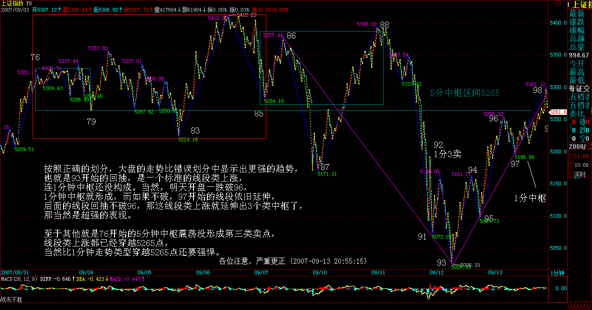
明天，就要注意这线段类上涨的结束位置，然后下来的线段调整，必然形成 1 分钟中枢，其后走势，都与该 1 分钟中枢的演化相关，这太简单，就不要详细说了。
等等，找找有没有发现本 ID 错误的，都给戴上大红花。
[ 匿名 ] 赚到了 2007-09-13 17:18:33 [ 匿名 ] laowang
2007-09-13 16:23:07 疑问： 缠 MM：98-99 并不是一线段啊？只是一笔，各位同学有不同意见吗？
=========
同感，97 接下来的线段还没走完。
[ 匿名 ] 新浪网友 2007-09-13 17:10:22 有疑问：98 到 99 应该不是一个线段吧？我的看法从 97 开始的线段目前还没有走完，请大家讨论。
[ 匿名 ] 新浪网友 2007-09-13 16:27:34 我觉得 98、99 段分得有问题。我在分时，仅到 97 段。请斑竹讲解一些。谢谢
找到不少，可能有漏掉的，一律大红花。 由此可见，如本 ID 反复所说，本 ID 的理论如同几何学，是可以 100% 严密地讨论的，这里没有权威，连本 ID 都不是，本 ID 错了也就错了，没有什么可说的。 有人说，错了也没什么，只是把一段给分错了，但这里的差别大了去了，因为这样，市场的真实力度等就分析不对了，原来是一个线段类上涨，搞成 1 分钟走势，那样，回拉的力度差别就大了。而级别越小，证明回拉力度越大，所以必须绝对准确，这才能真正反映市场的真实情况。 必须用最严谨的态度来对待划分，这样才能真正看清楚市场在干什么。
补充一句，600078 的基本面，在 2 个月前就有相关传闻，但那时候关于矿的量没有说法，目前有了新进展，不过最终能否实现对上市公司的装入，那是一个远没答案的问题。而且详勘资料本 ID 还没看到，所以一切都只是一个传闻，就算本 ID 最近看到了正式的详勘资料，也绝对不能保证这玩意就能放到上市公司里，所以一定不能以此为准。